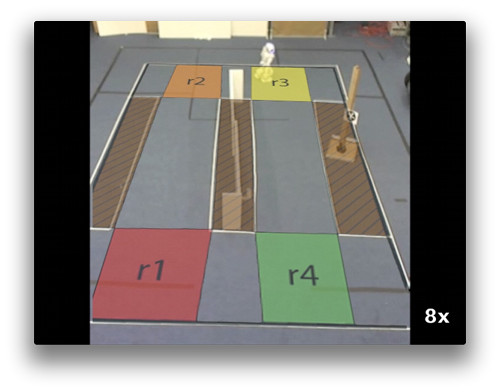
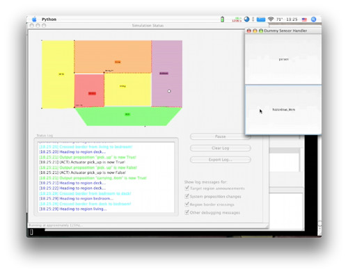

The LTLMoP (Linear Temporal Logic MissiOn Planning) toolkit is a collection of Python applications for designing, testing, and implementing hybrid controllers generated automatically from task specifications written in Structured English or Temporal Logic.
If you would like to see an example of LTLMoP in action, please watch one of the following demonstration videos:
 (More videos are available at the Cornell ASL Youtube channel.)
Unless otherwise specified, LTLMoP is released under the GPLv3 license. The JTLV library used for synthesis is LGPL.
THE PROGRAM IS PROVIDED "AS IS" WITHOUT WARRANTY OF ANY KIND, EITHER EXPRESSED OR IMPLIED, INCLUDING, BUT NOT LIMITED TO, THE IMPLIED WARRANTIES OF MERCHANTABILITY AND FITNESS FOR A PARTICULAR PURPOSE.